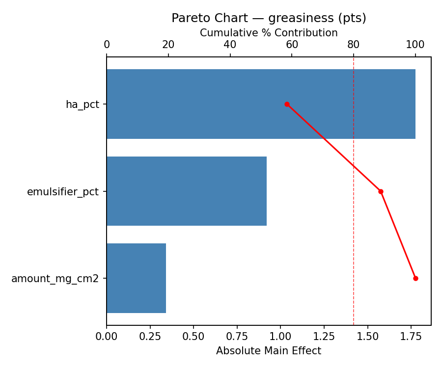
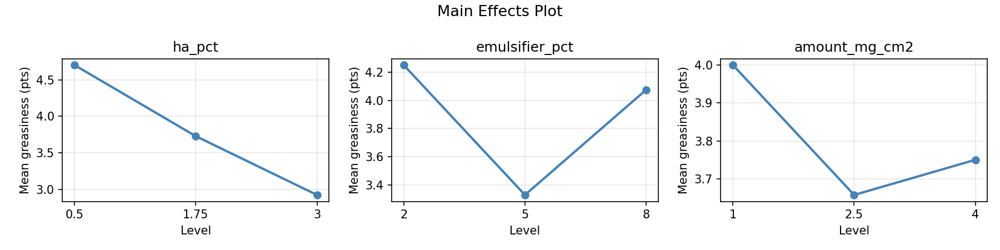
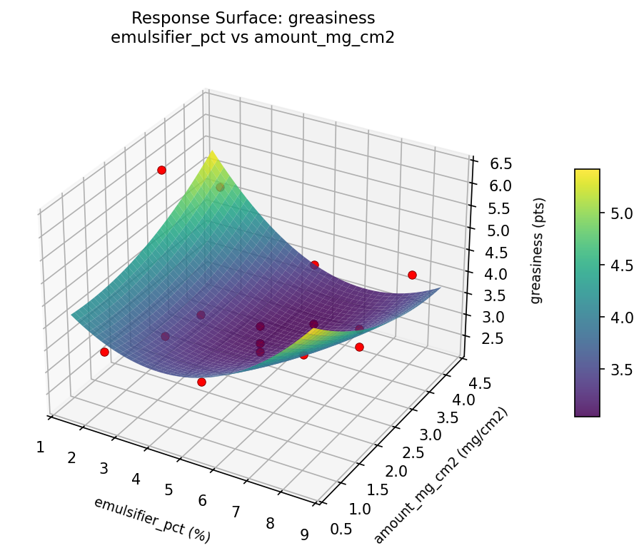
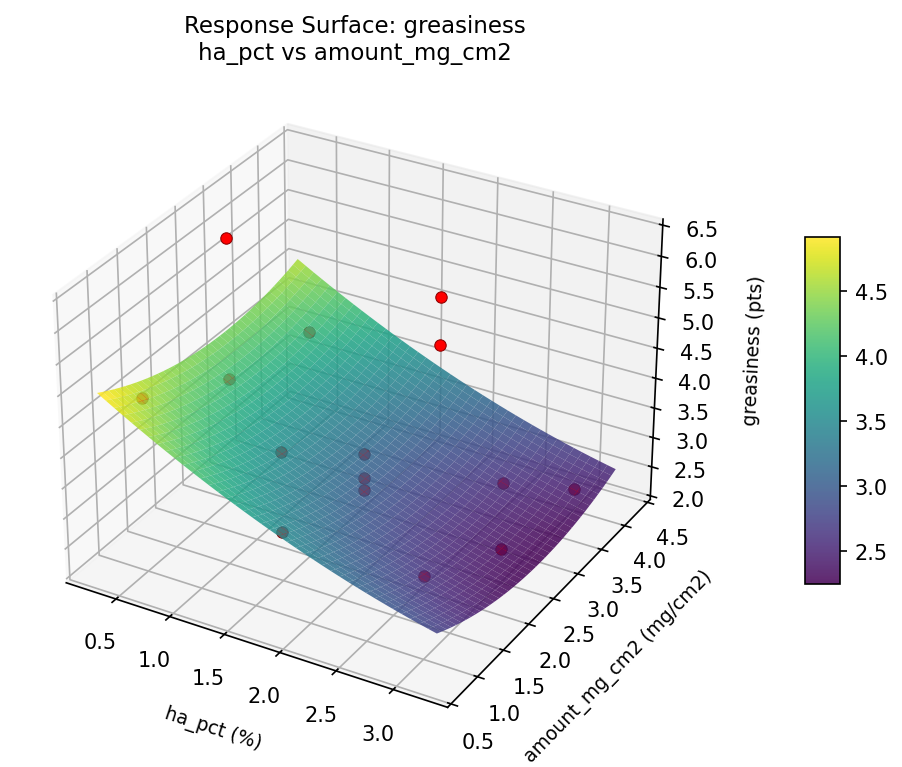
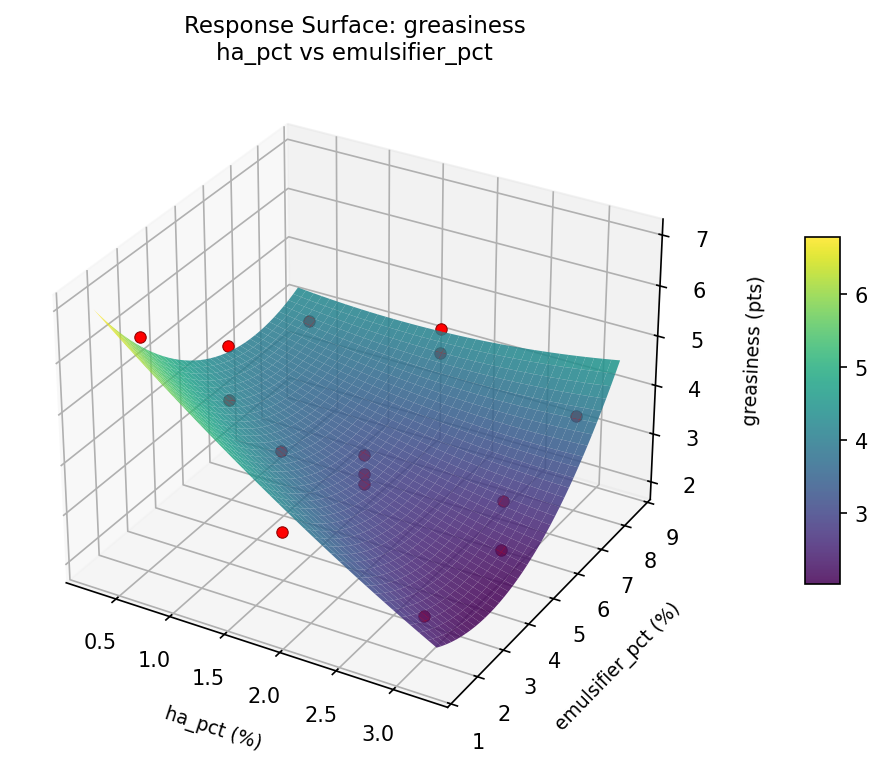
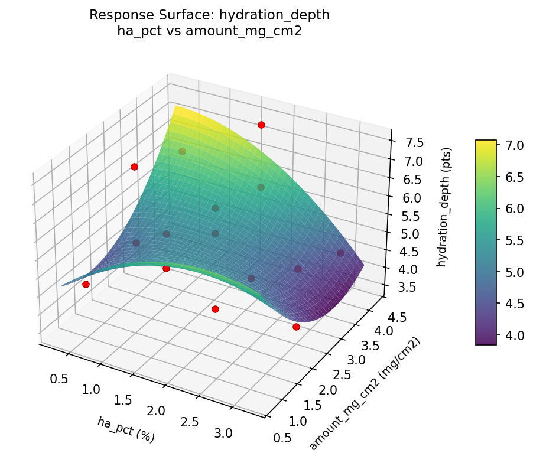
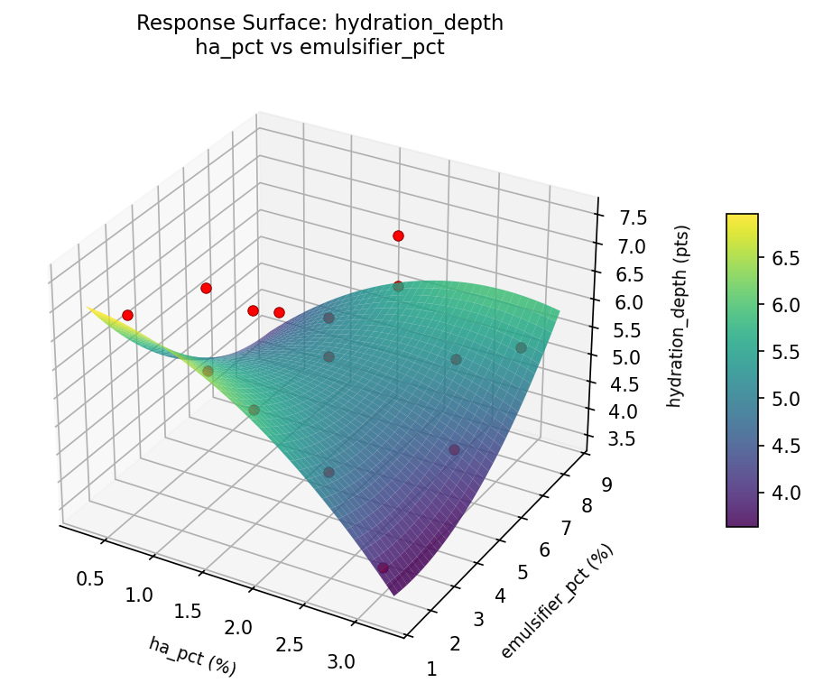

Summary
This experiment investigates moisturizer absorption rate. Box-Behnken design to maximize hydration depth and minimize greasy residue by tuning hyaluronic acid concentration, emulsifier ratio, and application amount.
The design varies 3 factors: ha pct (%), ranging from 0.5 to 3.0, emulsifier pct (%), ranging from 2 to 8, and amount mg cm2 (mg/cm2), ranging from 1 to 4. The goal is to optimize 2 responses: hydration depth (pts) (maximize) and greasiness (pts) (minimize). Fixed conditions held constant across all runs include base = oil_in_water, ph = 5.5.
A Box-Behnken design was chosen because it efficiently fits quadratic models with 3 continuous factors while avoiding extreme corner combinations — requiring only 15 runs instead of the 8 needed for a full factorial at two levels.
Quadratic response surface models were fitted to capture potential curvature and factor interactions. The RSM contour plots below visualize how pairs of factors jointly affect each response.
Key Findings
For hydration depth, the most influential factors were ha pct (37.7%), amount mg cm2 (36.1%), emulsifier pct (26.2%). The best observed value was 7.5 (at ha pct = 1.75, emulsifier pct = 5, amount mg cm2 = 2.5).
For greasiness, the most influential factors were ha pct (58.4%), emulsifier pct (30.3%), amount mg cm2 (11.3%). The best observed value was 2.3 (at ha pct = 0.5, emulsifier pct = 8, amount mg cm2 = 2.5).
Recommended Next Steps
- Run confirmation experiments at the predicted optimal settings to validate the model.
- Consider whether any fixed factors should be varied in a future study.
Experimental Setup
Factors
| Factor | Low | High | Unit |
|---|
ha_pct | 0.5 | 3.0 | % |
emulsifier_pct | 2 | 8 | % |
amount_mg_cm2 | 1 | 4 | mg/cm2 |
Fixed: base = oil_in_water, ph = 5.5
Responses
| Response | Direction | Unit |
|---|
hydration_depth | ↑ maximize | pts |
greasiness | ↓ minimize | pts |
Configuration
{
"metadata": {
"name": "Moisturizer Absorption Rate",
"description": "Box-Behnken design to maximize hydration depth and minimize greasy residue by tuning hyaluronic acid concentration, emulsifier ratio, and application amount"
},
"factors": [
{
"name": "ha_pct",
"levels": [
"0.5",
"3.0"
],
"type": "continuous",
"unit": "%"
},
{
"name": "emulsifier_pct",
"levels": [
"2",
"8"
],
"type": "continuous",
"unit": "%"
},
{
"name": "amount_mg_cm2",
"levels": [
"1",
"4"
],
"type": "continuous",
"unit": "mg/cm2"
}
],
"fixed_factors": {
"base": "oil_in_water",
"ph": "5.5"
},
"responses": [
{
"name": "hydration_depth",
"optimize": "maximize",
"unit": "pts"
},
{
"name": "greasiness",
"optimize": "minimize",
"unit": "pts"
}
],
"settings": {
"operation": "box_behnken",
"test_script": "use_cases/219_moisturizer_absorption/sim.sh"
}
}
Experimental Matrix
The Box-Behnken Design produces 15 runs. Each row is one experiment with specific factor settings.
| Run | ha_pct | emulsifier_pct | amount_mg_cm2 |
|---|
| 1 | 1.75 | 2 | 1 |
| 2 | 1.75 | 5 | 2.5 |
| 3 | 3 | 5 | 4 |
| 4 | 3 | 5 | 1 |
| 5 | 1.75 | 5 | 2.5 |
| 6 | 1.75 | 5 | 2.5 |
| 7 | 0.5 | 5 | 4 |
| 8 | 3 | 2 | 2.5 |
| 9 | 1.75 | 2 | 4 |
| 10 | 3 | 8 | 2.5 |
| 11 | 0.5 | 5 | 1 |
| 12 | 1.75 | 8 | 4 |
| 13 | 0.5 | 2 | 2.5 |
| 14 | 0.5 | 8 | 2.5 |
| 15 | 1.75 | 8 | 1 |
Step-by-Step Workflow
1
Preview the design
$ python doe.py info --config use_cases/219_moisturizer_absorption/config.json
2
Generate the runner script
$ python doe.py generate --config use_cases/219_moisturizer_absorption/config.json \
--output use_cases/219_moisturizer_absorption/results/run.sh --seed 42
3
Execute the experiments
$ bash use_cases/219_moisturizer_absorption/results/run.sh
4
Analyze results
$ python doe.py analyze --config use_cases/219_moisturizer_absorption/config.json
5
Get optimization recommendations
$ python doe.py optimize --config use_cases/219_moisturizer_absorption/config.json
6
Generate the HTML report
$ python doe.py report --config use_cases/219_moisturizer_absorption/config.json \
--output use_cases/219_moisturizer_absorption/results/report.html
Real-World Experiment Workflow
ℹ
Physical Cosmetics Formulation? Use the Manual Workflow
Cosmetics experiments involve real chemical formulations, skin application, and sensory evaluation that must be tested on actual products. The simulation script above is for demonstration. For your real experiments, use record, status, and export-worksheet.
$ python doe.py export-worksheet --config use_cases/219_moisturizer_absorption/config.json \
--format csv --output worksheet.csv
$ python doe.py status --config use_cases/219_moisturizer_absorption/config.json
$ python doe.py record --config use_cases/219_moisturizer_absorption/config.json --run 1
$ python doe.py analyze --config use_cases/219_moisturizer_absorption/config.json --partial
$ python doe.py analyze --config use_cases/219_moisturizer_absorption/config.json
$ python doe.py optimize --config use_cases/219_moisturizer_absorption/config.json
$ python doe.py report --config use_cases/219_moisturizer_absorption/config.json \
--output report.html
✔
Works Without a Test Script
The analysis pipeline doesn't care how results were produced. Record your measurements with record, and the full analysis, optimization, and reporting pipeline works identically. Use --partial to get early insights before all runs are complete.
Features Exercised
| Feature | Value |
|---|
| Design type | box_behnken |
| Factor types | continuous (all 3) |
| Arg style | double-dash |
| Responses | 2 (hydration_depth ↑, greasiness ↓) |
| Total runs | 15 |
Analysis Results
Generated from actual experiment runs using the DOE Helper Tool.
Response: hydration_depth
Top factors: ha_pct (37.7%), amount_mg_cm2 (36.1%), emulsifier_pct (26.2%).
Pareto Chart

Main Effects Plot

Response: greasiness
Top factors: ha_pct (58.4%), emulsifier_pct (30.3%), amount_mg_cm2 (11.3%).
Pareto Chart

Main Effects Plot

Response Surface Plots
3D surfaces fitted with quadratic RSM. Red dots are observed data points.
greasiness emulsifier pct vs amount mg cm2

greasiness ha pct vs amount mg cm2

greasiness ha pct vs emulsifier pct

hydration depth emulsifier pct vs amount mg cm2

hydration depth ha pct vs amount mg cm2

hydration depth ha pct vs emulsifier pct

Full Analysis Output
RSM surface: rsm_hydration_depth_ha_pct_vs_emulsifier_pct.png
RSM surface: rsm_hydration_depth_ha_pct_vs_amount_mg_cm2.png
RSM surface: rsm_hydration_depth_emulsifier_pct_vs_amount_mg_cm2.png
RSM surface: rsm_greasiness_ha_pct_vs_emulsifier_pct.png
RSM surface: rsm_greasiness_ha_pct_vs_amount_mg_cm2.png
RSM surface: rsm_greasiness_emulsifier_pct_vs_amount_mg_cm2.png
=== Main Effects: hydration_depth ===
Factor Effect Std Error % Contribution
--------------------------------------------------------------
ha_pct 0.9357 0.2948 37.7%
amount_mg_cm2 0.8964 0.2948 36.1%
emulsifier_pct 0.6500 0.2948 26.2%
=== Summary Statistics: hydration_depth ===
ha_pct:
Level N Mean Std Min Max
------------------------------------------------------------
0.5 4 5.6000 1.0677 4.7000 6.8000
1.75 7 5.8857 1.2402 3.5000 7.5000
3 4 4.9500 1.0599 3.7000 6.2000
emulsifier_pct:
Level N Mean Std Min Max
------------------------------------------------------------
2 4 5.9500 1.6543 3.7000 7.5000
5 7 5.3000 1.0646 3.5000 6.3000
8 4 5.6250 0.8461 4.7000 6.7000
amount_mg_cm2:
Level N Mean Std Min Max
------------------------------------------------------------
1 4 5.8500 0.8505 4.7000 6.7000
2.5 7 5.1286 1.2446 3.5000 6.8000
4 4 6.0250 1.1955 4.6000 7.5000
=== Main Effects: greasiness ===
Factor Effect Std Error % Contribution
--------------------------------------------------------------
ha_pct 1.7750 0.2718 58.4%
emulsifier_pct 0.9214 0.2718 30.3%
amount_mg_cm2 0.3429 0.2718 11.3%
=== Summary Statistics: greasiness ===
ha_pct:
Level N Mean Std Min Max
------------------------------------------------------------
0.5 4 4.7000 1.1633 3.7000 6.3000
1.75 7 3.7286 0.8118 2.8000 4.9000
3 4 2.9250 0.6238 2.3000 3.6000
emulsifier_pct:
Level N Mean Std Min Max
------------------------------------------------------------
2 4 4.2500 1.6921 2.5000 6.3000
5 7 3.3286 0.7910 2.3000 4.8000
8 4 4.0750 0.4113 3.6000 4.6000
amount_mg_cm2:
Level N Mean Std Min Max
------------------------------------------------------------
1 4 4.0000 0.8124 3.3000 4.8000
2.5 7 3.6571 1.2700 2.5000 6.3000
4 4 3.7500 1.0878 2.3000 4.9000
Pareto chart (hydration_depth): use_cases/219_moisturizer_absorption/results/analysis/pareto_hydration_depth.png
Pareto chart (greasiness): use_cases/219_moisturizer_absorption/results/analysis/pareto_greasiness.png
Main effects (hydration_depth): use_cases/219_moisturizer_absorption/results/analysis/main_effects_hydration_depth.png
Main effects (greasiness): use_cases/219_moisturizer_absorption/results/analysis/main_effects_greasiness.png
Optimization Recommendations
=== Optimization: hydration_depth ===
Direction: maximize
Best observed run: #3
ha_pct = 1.75
emulsifier_pct = 5
amount_mg_cm2 = 2.5
Value: 7.5
RSM Model (linear, R² = 0.2120, Adj R² = -0.0029):
Coefficients:
intercept +5.5600
ha_pct +0.4500
emulsifier_pct -0.5250
amount_mg_cm2 -0.0750
RSM Model (quadratic, R² = 0.4363, Adj R² = -0.5785):
Coefficients:
intercept +5.8333
ha_pct +0.4500
emulsifier_pct -0.5250
amount_mg_cm2 -0.0750
ha_pct*emulsifier_pct -0.3250
ha_pct*amount_mg_cm2 -0.1250
emulsifier_pct*amount_mg_cm2 -0.2250
ha_pct^2 -0.1542
emulsifier_pct^2 -0.8042
amount_mg_cm2^2 +0.4458
Curvature analysis:
emulsifier_pct coef=-0.8042 concave (has a maximum)
amount_mg_cm2 coef=+0.4458 convex (has a minimum)
ha_pct coef=-0.1542 concave (has a maximum)
Notable interactions:
ha_pct*emulsifier_pct coef=-0.3250 (antagonistic)
Predicted optimum (from linear model):
ha_pct = 3
emulsifier_pct = 2
amount_mg_cm2 = 2.5
Predicted value: 6.5350
Model quality: Weak fit — consider adding center points or using a different design.
Factor importance:
1. emulsifier_pct (effect: 1.3, contribution: 47.5%)
2. ha_pct (effect: 0.9, contribution: 31.7%)
3. amount_mg_cm2 (effect: 0.6, contribution: 20.8%)
=== Optimization: greasiness ===
Direction: minimize
Best observed run: #1
ha_pct = 0.5
emulsifier_pct = 8
amount_mg_cm2 = 2.5
Value: 2.3
RSM Model (linear, R² = 0.3206, Adj R² = 0.1353):
Coefficients:
intercept +3.7733
ha_pct +0.0875
emulsifier_pct -0.6500
amount_mg_cm2 -0.4375
RSM Model (quadratic, R² = 0.7370, Adj R² = 0.2636):
Coefficients:
intercept +4.4333
ha_pct +0.0875
emulsifier_pct -0.6500
amount_mg_cm2 -0.4375
ha_pct*emulsifier_pct +0.0500
ha_pct*amount_mg_cm2 +0.2750
emulsifier_pct*amount_mg_cm2 +0.0500
ha_pct^2 -1.1542
emulsifier_pct^2 -0.4292
amount_mg_cm2^2 +0.3458
Curvature analysis:
ha_pct coef=-1.1542 concave (has a maximum)
emulsifier_pct coef=-0.4292 concave (has a maximum)
amount_mg_cm2 coef=+0.3458 convex (has a minimum)
Predicted optimum (from quadratic model):
ha_pct = 1.75
emulsifier_pct = 2
amount_mg_cm2 = 1
Predicted value: 5.4875
Model quality: Good fit — general trends are captured, some noise remains.
Factor importance:
1. emulsifier_pct (effect: 1.3, contribution: 37.9%)
2. ha_pct (effect: 1.2, contribution: 36.0%)
3. amount_mg_cm2 (effect: 0.9, contribution: 26.1%)